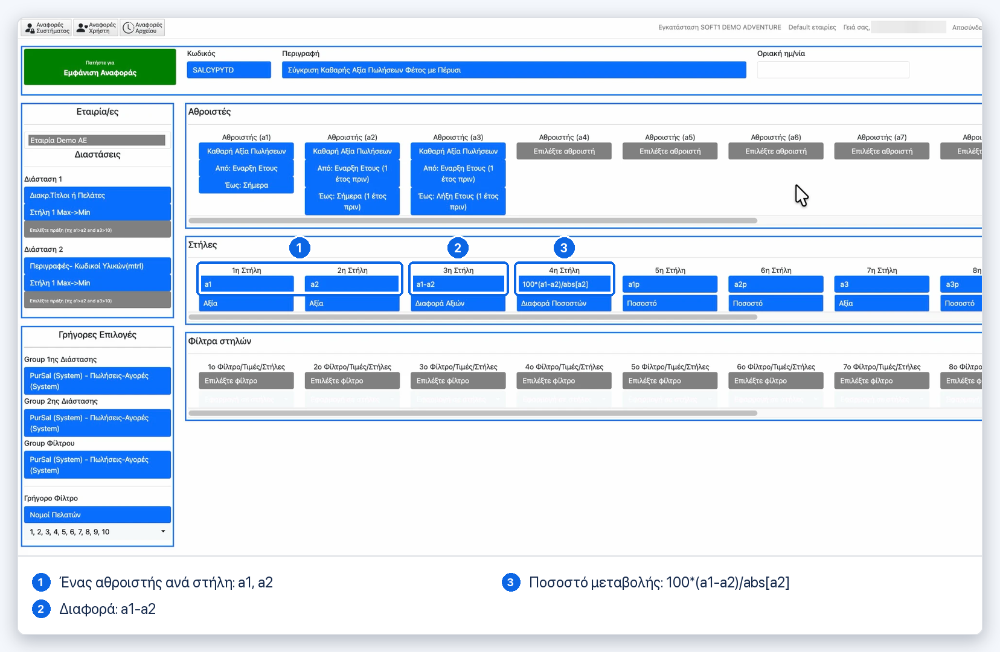
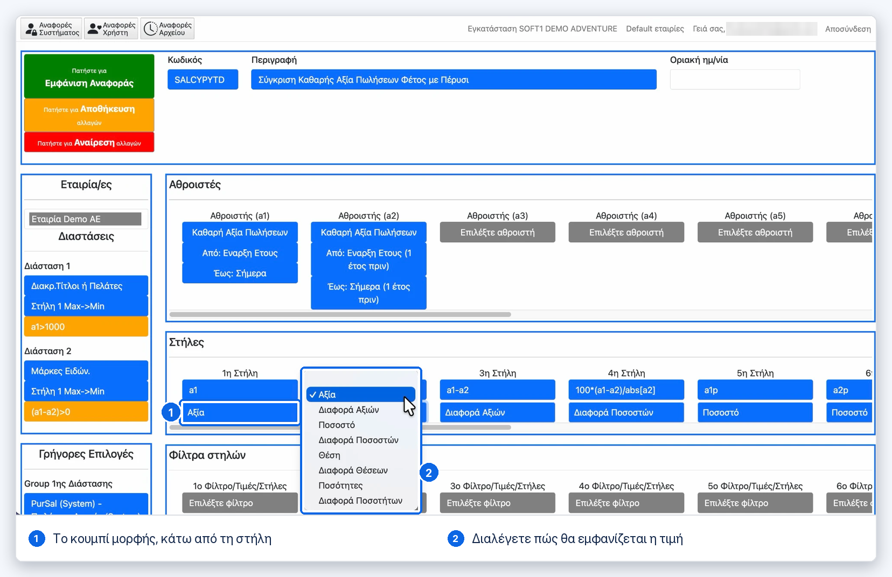
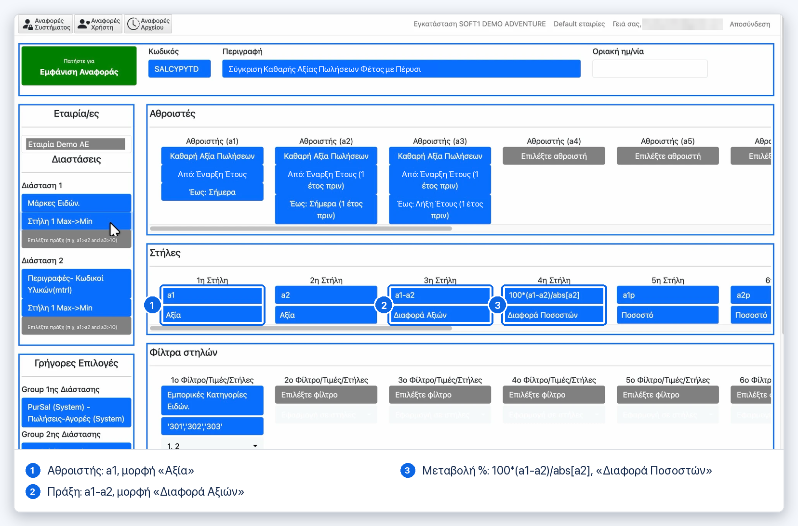

Υπολογισμένες στήλες
Μια στήλη μπορεί να δείχνει πράξη ανάμεσα σε αθροιστές: διαφορά, ποσοστό μεταβολής, μέση τιμή και ό,τι άλλο χρειάζεστε.
Τι κάνει#
Στο πεδίο Επιλέξτε αθροιστή/πράξη κάθε στήλης δεν γράφετε μόνο a1. Γράφετε και πράξεις με τους αθροιστές a1 … a0, με τα σύμβολα +, -, *, / και παρενθέσεις. Το MARS κάνει τον υπολογισμό για κάθε γραμμή και για τα σύνολα.
| Θέλετε | Γράφετε | Μορφή |
|---|---|---|
| Διαφορά φέτος - πέρυσι | a1-a2 |
Διαφορά Αξιών |
| Ποσοστό μεταβολής | (a1-a2)/(a2)*100 |
Διαφορά Ποσοστών |
| Μέση τιμή μονάδας (αξία / ποσότητα) | a1/(a3) |
Αξία |
| Απόλυτη διαφορά (χωρίς πρόσημο) | abs[a1-a2] |
Διαφορά Αξιών |
| Σύνολο χωρίς ένα μέρος | a1-a2 (a2 = ίδιος αθροιστής με φίλτρο στο μέρος που αφαιρείτε) |
Αξία |
| Ποσοστό γραμμής επί του συνόλου με πράξη | a1/(a1z)*100 |
Ποσοστό |
Πότε το χρησιμοποιώ#
Ο οικονομικός διευθυντής θέλει, ανά πελάτη, τζίρο φέτος, τζίρο πέρυσι και ποσοστό μεταβολής, ώστε να εντοπίσει όσους πέφτουν πάνω από 20%. Με τρεις στήλες (a1, a2, (a1-a2)/(a2)*100) και μία συνθήκη γραμμών το έχει σε μία αναφορά.
Βήματα#
- Ορίστε πρώτα τους αθροιστές που χρειάζεστε στις θέσεις a1, a2 κ.λπ., με τις περιόδους τους.
-
Στην ενότητα Στήλες, στο πεδίο Επιλέξτε αθροιστή/πράξη της στήλης, γράψτε την πράξη, π.χ.
(a1-a2)/(a2)*100.
Πεδία στήλης με αθροιστή ή πράξη (a1, a2, a1-a2, ποσοστό μεταβολής) -
Από τη λίστα κάτω από το πεδίο διαλέξτε μορφή: Αξία, Διαφορά Αξιών, Ποσοστό, Διαφορά Ποσοστών, Θέση, Διαφορά Θέσεων, Ποσότητες, Διαφορά Ποσοτήτων.

Ανοιχτή λίστα μορφής στήλης (Αξία, Διαφορά Αξιών, Ποσοστό …) -
Πατήστε Εμφάνιση Αναφοράς.

Συμβουλές και συχνά λάθη#
- Διαίρεση με το μηδέν: βάζετε πάντα τον παρονομαστή σε παρένθεση, π.χ.
a1/(a2)και όχιa1/a2. Ό,τι είναι μέσα σε παρένθεση το MARS το προστατεύει: αν βγει μηδέν, η στήλη μένει κενή σε εκείνη τη γραμμή αντί να βγει σφάλμα. Το ίδιο ισχύει και για τον αριθμητή, οπότε μια παρένθεση που βγαίνει μηδέν δίνει κενό αντί για 0. - Για απόλυτη τιμή χρησιμοποιήστε αγκύλες:
abs[ … ]. - Ο αθροιστής πρέπει να υπάρχει. Αν γράψετε
a3και η θέση a3 είναι άδεια, η στήλη θα βγει κενή ή μηδέν. - Η επικεφαλίδα μιας υπολογισμένης στήλης γράφει την πράξη και «Υπολογισμός Στηλών».
- Ελληνικά γράμματα: αν γράψετε «α1-α2», μετατρέπεται μόνο του σε «a1-a2».
- Ειδικοί αθροιστές μέσα σε πράξεις: μπορείτε να γράψετε π.χ.
a2t-a1tγια τη διαφορά θέσεων.